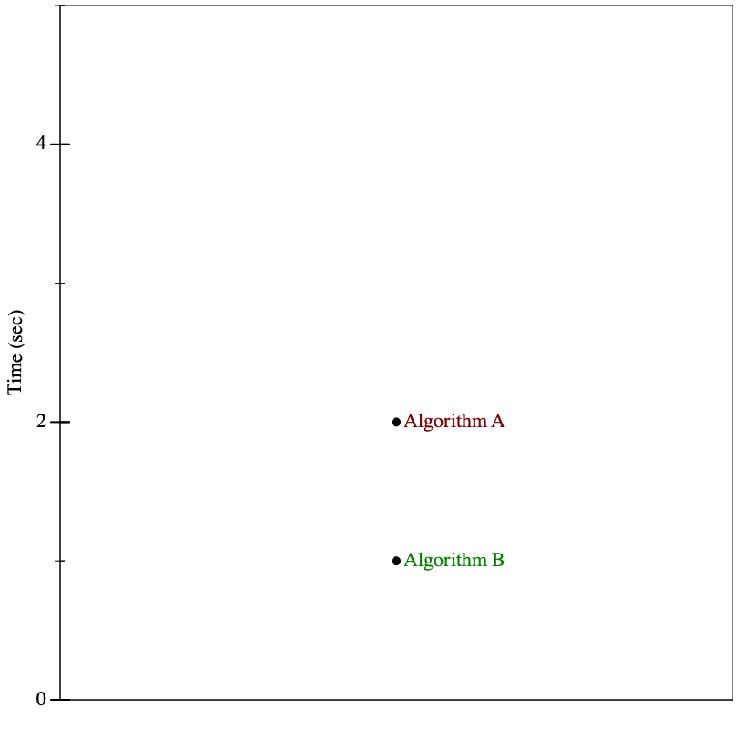
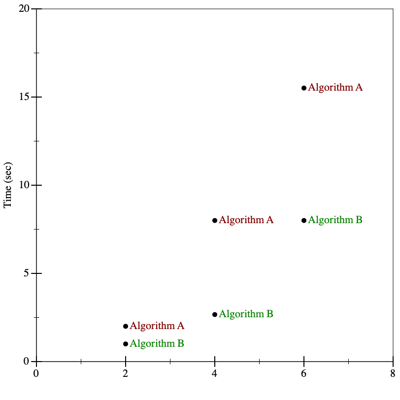
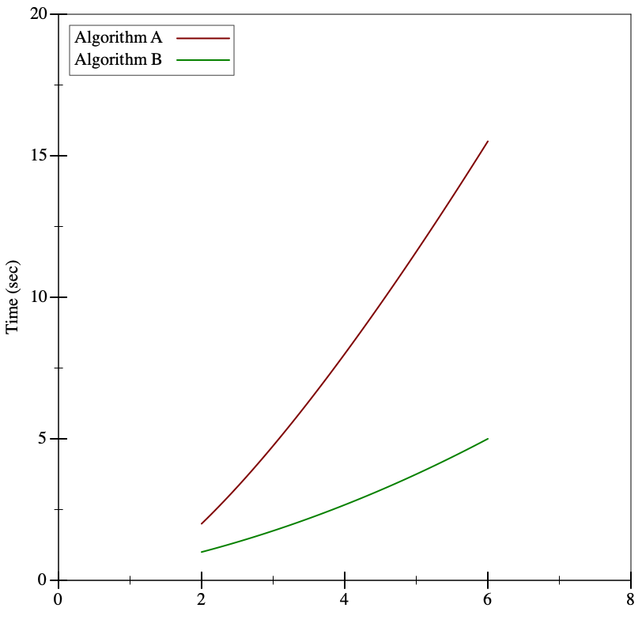
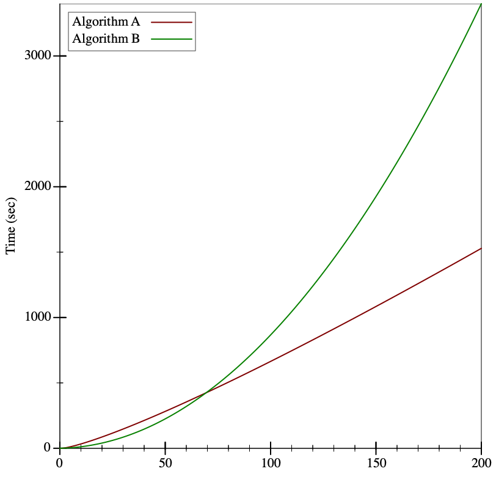
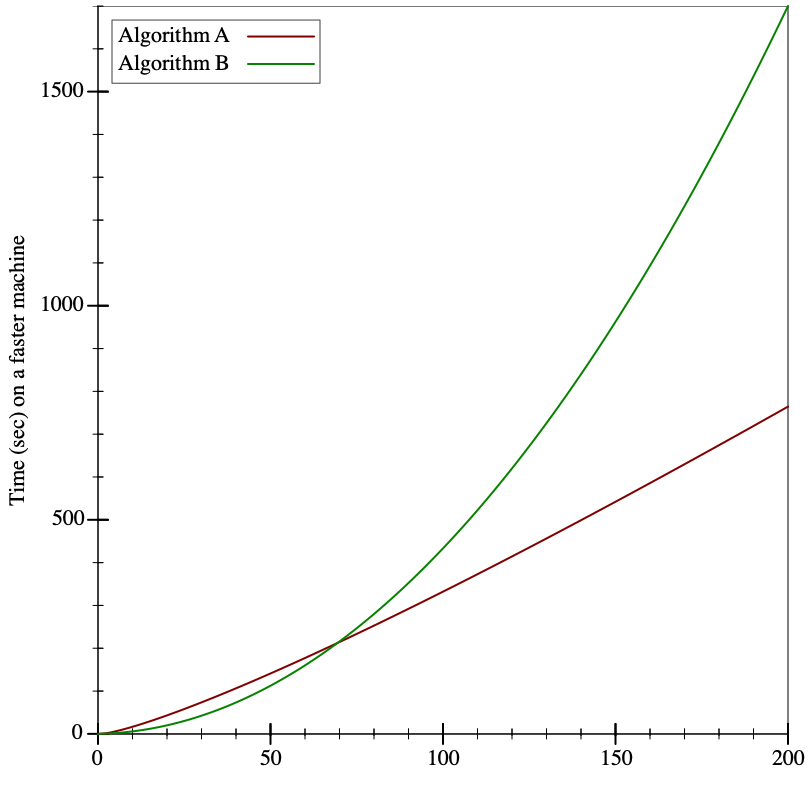
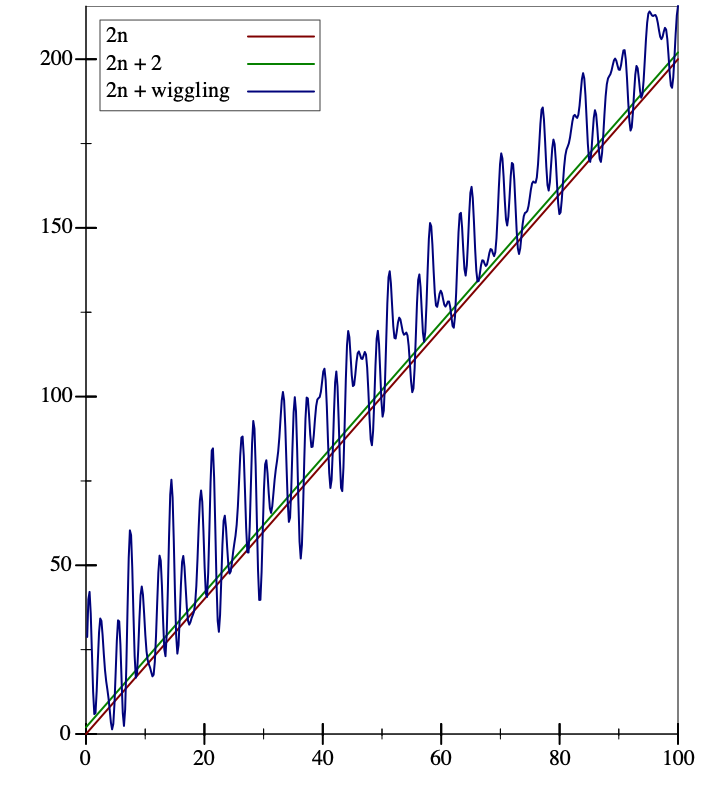
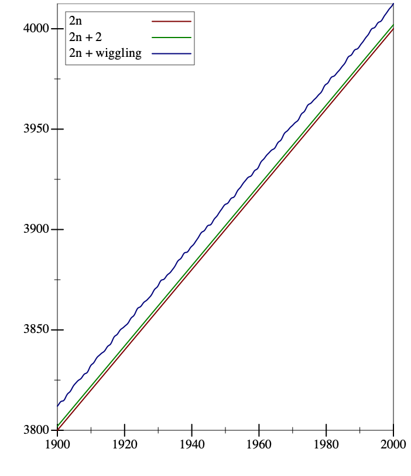
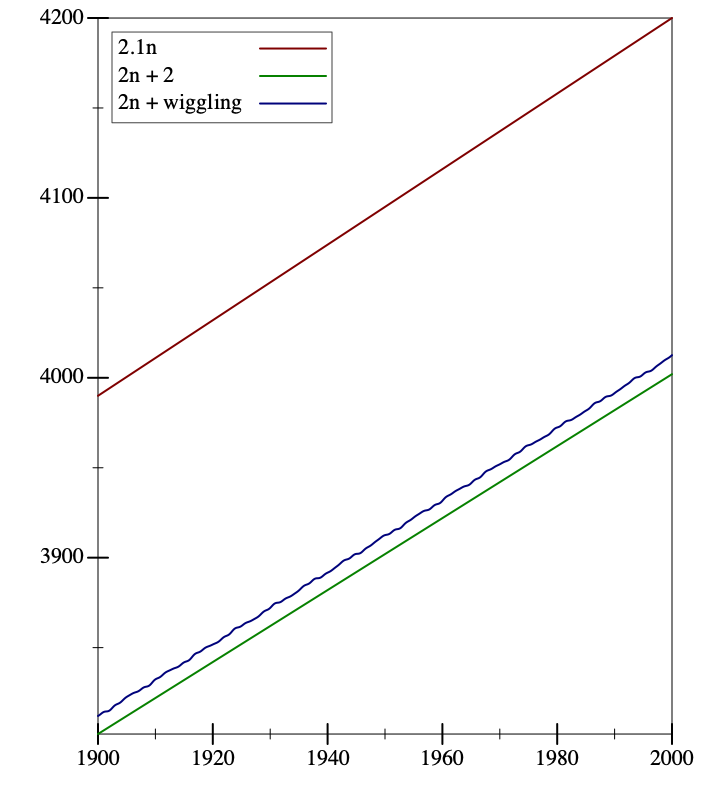
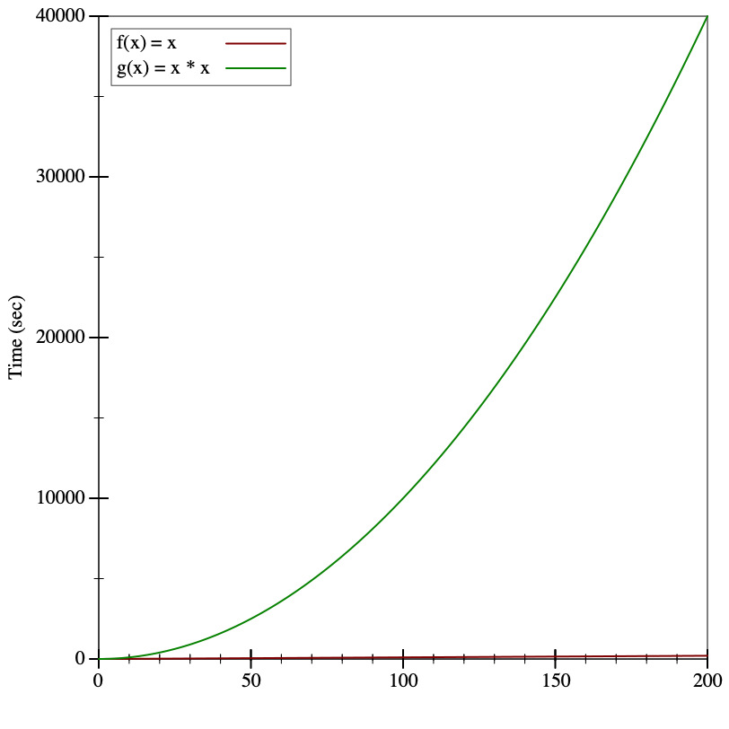

Lecture 27: Introduction to Big-O Analysis
When is one algorithm “better” than another?
27.1 Motivation
We’ve now seen several data structures that can be used to store collections of items: ILists, ArrayLists, BinaryTrees and binary search trees, and Deques. Primarily we have introduced each of these types to study some new pattern of object-oriented construction: interfaces and linked lists, indexed data structures, branching structures, and wrappers and sentinels. We’ve implemented many of the same algorithms for each data structure: inserting items, sorting items, finding items, mapping over items, etc. We might well start to wonder, is there anything in particular that could help us choose which of these structures to use, and when?
To guide this discussion, we’re going to focus for the next few lectures on various sorting algorithms, and analyze them to determine their characteristic performance. We choose sorting algorithms for several reasons: they are ubiquitous (almost every problem at some stage requires sorting data), they are intuitive (the goal is simply to put the data in order; how that happens is the interesting part!), they have widely varying performance, and they are fairly straightforward to analyze. The lessons learned here apply more broadly than merely to sorting; they can be used to help describe how any algorithm behaves, and even better, to help compare one algorithm to another in a meaningful way.
27.2 What to measure, and how?
Do Now!
What kinds of things should we look for, when looking for a “good” algorithm? (What does “good” even mean in this context?) Brainstorm several possibilities.
27.2.1 Adventures in time...
Suppose we have two sorting algorithms available to use for a particular problem. Both algorithms will
correctly sort a collection of numbers —

That hardly seems like enough information to decide which of the two algorithms performs better. We need to see how the two algorithms fare on inputs of different sizes, to see how their performance changes as a function of input size. It turns out the particular input above was of size 2. When we run these two algorithms again on inputs of size 4, and again on inputs of size 6, we see

If we connect the dots, we see the following:

Still not much to go on, but it looks like Algorithm A is substantially slower than Algorithm B. Or is it? Let’s try substantially larger inputs:

It turns out that while Algorithm B started off faster than Algorithm A, it wasn’t by much, and it didn’t last very long: even for reasonably small inputs (only 60 items or so), Algorithm A winds up being substantially faster.
We have to be quite careful when talking about performance: a program’s behavior on small inputs typically is not indicative of how it will behave on larger inputs. Instead, we want to categorize the behavior as a function of the input size. As soon as we start talking about “categories”, though, we have to decide just how fine-grained we want them to be.
For example, the graphs above supposedly measured the running time of these two algorithms in seconds. But they don’t specify which machine ran the algorithms: if we used a machine that was twice as fast, the precise numbers in the graphs would change:

But the shapes of the graphs are identical!
Surely our comparison of algorithms cannot depend on precisely which machine we use, or else we’d have to redo our comparisons every time new hardware came out. Instead, we ought to consider something more abstract than elapsed time, something that is intrinsic to the functioning of the algorithm. We should count how many “operations” it performs: that way, regardless of how quickly a given machine can execute an “operation”, we have a stable baseline for comparisons.
27.2.2 ...and space
The argument above shows that measuring time is subtle, and we should measure operations instead. An equivalent argument shows that measuring memory usage is equally tricky: objects on a 16-bit controller (like old handheld gaming devices) take up half as much memory as objects on a 32-bit processor, which take up half as much memory again as on 64-bit machines... Instead of measuring exact memory usage, we should count how many objects are created.
27.2.3 It was the best of times, it was the worst of times...
In fact, even measuring operations (or allocations) is tricky. Suppose we were asked, in real life, to sort a deck of cards numbered 1 through 100. How long would that take? If the deck was already sorted, it wouldn’t take much time at all, since we’d just have to confirm that it was in the correct order. On the other hand, if it was fully scrambled, it might take a while longer.
Likewise, when we analyze algorithms for their running times, we have to be careful to consider their behaviors on the best-possible inputs for them, and on the worst-possible inputs, and (if we can) also on “average” inputs. Often, determining what an “average” input looks like is quite hard, so we often settle for just determining best and worst-case behaviors.
27.2.4 You get what you pay for
The graphs and informal descriptions above give a flavor of how we might want to measure runtime behavior
of our programs. We have to measure at least four things: their best and worst times (as functions of the input size)
and their best and worst memory usages (as functions of the input size). But you should be skeptical:
is it remotely plausible to talk in vague generalities about “operations”?
For example, it probably makes very little sense to claim that “capitalizing a string of 100 characters”
takes the same amount of effort as “adding two integers” —
Constants (like 1, true, or "hello") are free of cost.
Every arithmetic operation costs \(1\) unit, plus the costs associated with evaluating its subexpressions.
Every method invocation costs \(1\) unit, plus the costs associated with evaluating the arguments, plus the cost of evaluating the method body.
Every statement costs \(1\) unit, plus the costs associated with evaluating its subexpressions.
27.3 Introducing big-O and big-Ω notation
Performance of an algorithm is best expressed as a function of the size of the input.
Since algorithms are often recursive, the performance of an algorithm at one size often depends the performance of that algorithm at another size.
We need the ability to compare one function to another holistically, to express when one function “is no bigger than” or “no smaller than” another function.
Comparing two functions ought to behave like less-than-or-equal comparisons should: it should be reflexive, transitive and antisymmetric.
27.3.1 Performance is a function of input sizes
interface IList<T> { int length(); } class MtList<T> implements IList<T> { public int length() { return 0; } } class ConsList<T> implements IList<T> { T first; IList<T> rest; public int length() { return 1 + this.rest.length(); } }
Do Now!
Figure out this cost. Justify your answer.
For each ConsList item, it costs \(1\) unit to have invoked length(), and within that method we have to perform one addition (which costs \(1\) unit) on a constant (\(0\) units) and the result of invoking this.rest.length(). We also need to account for the cost of running that method itself.
It costs \(1\) unit to have invoked length, and \(1\) more unit to return 0 in the MtList case.
Or is it? Our original question was to determine the cost of evaluating someList.length(), not someList.rest.length() —
27.3.2 Performance of recursive algorithms
When \(n = 0\), the list is empty, and we determined above that the cost is \(1\) to have invoked the method, and \(1\) more for the return 0 statement.
When \(n > 0\), the list is non-empty. We determined above that the cost is \(1\) to have invoked the method, \(1\) for the addition, \(0\) for the constant, plus whatever the cost of running this.rest.length() is. Above, we ignored this entirely. But now we have a better answer: the rest of this list has size n-1, and we have a function for describing the cost of running the length method —
it’s \(T\) itself!
\begin{equation*}T(n) = \begin{cases} 2 &\text{when $n = 0$} \\ 2 + T(n-1) &\text{when $n > 0$} \end{cases}\end{equation*}
Do Now!
Prove that \(T(n) = 2n + 2\) is a closed-form solution to the recurrence above.
\begin{equation*}\begin{aligned} T(n) &= 2 + T(n-1) &\text{when $n > 0$} \\ &= 2 + (2 + T(n-2)) &\text{when $n-1 > 0$} \\ &= 2 + (2 + (2 + T(n-3))) &\text{when $n-2 > 0$} \\ &= \ldots \\ &= 2 + \underbrace{(2 + (2 + \ldots + 2))}_{n\text{ times}} &\text{when we reach the base case} \\ &= 2 + n * 2 = 2n+2 \end{aligned}\end{equation*}
27.3.3 How can we compare functions?
It’s comforting to think that all we need to do is count the steps in our code, and somehow we’ll simply obtain the correct answer. But this counting is weirdly too-precise: because our cost model over-simplifies (such that arithmetic and function calls are equally costly), we shouldn’t have much confidence that the particular coefficients in our formula above are actually correct. Perhaps function calls are five times as expensive as arithmetic, or perhaps return statements are ten times more costly than we thought. If so, our formula changes from \(T(n) = 2n+2\) to \(T(n) = 6n+11\). Should we care about these detailed changes, or is the formula “more or less the same”?
Let’s try to make this notion of “roughly the same” a bit more precise. The key idea here is to define an upper bound for functions, as follows. Look at the function \(T(n)=2n+2\) again: as \(n\) gets larger and larger, that \(+2\) becomes proportionately less and less relevant to the overall value of the function. In fact, we could even add a bounded but arbitrarily wiggling function, rather than a constant, and the overall shape of the function still stays the same:
 
But clearly there will always be numbers for which \(2n\) is less than the other two. So it cannot be an upper bound for the other two functions. What if we try \(2.1n\)?
 At first, for small values of \(n\), things haven’t changed much: the wiggling function still is both greater and less than \(2.1n\). But notice that even for fairly small values of \(n\), we have that \(2.1n > 2n+2\). And if we go to larger values of \(n\), then \(2.1n\) is clearly greater than the other two functions. Since the functions’ values for small \(n\) are not that big, we’re concerned primarily with large \(n\), and in those cases, it looks like \(2.1n\) is indeed an upper bound for the other two functions. We say that we’re concerned with the asymptotic behavior, as \(n\) gets bigger and bigger.
A function \(g(x)\) is said to be an upper bound for a function \(f(x)\) if there exists some constant \(c\) such that for all “sufficiently large” values of \(x\), \(f(x)\) is less than \(c\) times \(g(x)\):\begin{equation*}\exists c . \exists N . \forall x > N . |f(x)| \leq c|g(x)|\end{equation*}
A function \(f(x)\) is said to be a lower bound for a function \(g(x)\) if there exists some constant \(c\) such that for all “sufficiently large” values of \(x\), \(f(x)\) is less than \(c\) times \(g(x)\):\begin{equation*}\exists c . \exists N . \forall x > N . f(x) < c g(x)\end{equation*}
Intuitively, we will use \(O(\cdot)\) to indicate worst-case behavior (i.e., “this algorithm gets no worse than this upper bound”), and \(\Omega(\cdot)\) to indicate best-case behavior (i.e. “this algorithm can never do better than this lower bound”).
27.3.4 Convenient properties of big-O notation
Reflexivity: For every function \(f\), it’s always the case that \(f\) is its own upper bound, i.e. \(f \in O(f)\).
Transitivity: For all functions \(f\), \(g\) and \(h\), if \(f \in O(g)\) and \(g \in O(h)\), then \(f \in O(h)\).
Symmetry: For all functions \(f\) and \(g\), if \(f \in O(g)\) and \(g \in O(f)\), then \(f\) and \(g\) are essentially “equal” up to constant factors.
Exercise
Prove these properties.
Suppose we have a constant function \(f(x) = c\). Then we can immediately tell that \(f \in O(1)\) —
\(c\) is clearly the upper bound for this function, since it doesn’t grow at all! Suppose we have two functions such that \(f \in O(g)\). What can we say about the asymptotic behavior of \(h(x) = k * f(x)\) for some constant \(k\)? We know that \(f \in O(g)\) means that for large enough \(x\), \(|f(x)| \leq c |g(x)|\) for some constant \(c\). With a little algebra, we can easily show that \(|h(x)| \leq (c/k)|g(x)|\) —
which means that \(h \in O(g)\) also. In other words, multiplying functions by constants doesn’t affect their asymptotic behavior. Suppose again we have two functions such that \(f \in O(g)\). What can we say about \(h(x) = f(x) + k\)? It’s straightforward to show \(h \in O(f)\), and so by transitivity \(h \in O(g)\). In other words, adding constants to functions doesn’t affect their asymptotic behavior.
Even better, we can use these big-\(O\) properties to analyze algorithms quickly and easily, especially when they involve loops.
27.4 Analyzing insertion-sort
interface ILoInt { ILoInt sort(); ILoInt insert(int n); } class MtLoInt { ILoInt sort() { return this; } ILoInt insert(int n) { return new ConsLoInt(n, this); } } class ConsLoInt { int first; ILoInt rest; ConsLoInt(int first, ILoInt rest) { this.first = first; this.rest = rest; } ILoInt sort() { return this.rest.sort().insert(this.first); } ILoInt insert(int n) { if (this.first < n) { return new ConsLoInt(this.first, this.rest.insert(n)); } else { return new ConsLoInt(n, this); } } }
When \(n = 0\), we’re inserting an item into an empty list, and this performs one allocation, and one statement. So \(T_{insert}(0) = 1\), and \(M_{insert}(0) = 1\).
- In the best case, the number to be inserted is less than everything else in the list. In that case, we perform one comparison, and construct one new ConsLoInt. In other words, we have
\begin{equation*}\begin{aligned} T_{insert}^{best}(n) &= 1 \\ M_{insert}^{best}(n) &= 1 \end{aligned}\end{equation*}
- In the worst case, the number to be inserted is greater than everything else in the list, and so must be inserted at the back. In that case, we have
\begin{equation*}\begin{aligned} T_{insert}^{worst}(n) &= 3 + T_{insert}^{worst}(n-1) \\ &= \underbrace{3 + 3 + \cdots + 3}_{n\text{ times}} + 1 \\ &= 3n + 1 \\ M_{insert}^{worst}(n) &= 1 + M_{insert}^{worst}(n-1) \\ &= \underbrace{1 + 1 + \cdots + 1}_{n\text{ times}} + 1 \\ &= n + 1 \\ \end{aligned}\end{equation*}
for the number of operations, because we must examine every single item in the list. From the best and worst case results we can conclude that\begin{equation*}\begin{alignedat}{2} 1 &\leq T_{insert}(n) &&\leq 3n+1 \\ 1 &\leq M_{insert}(n) &&\leq n+1 \end{alignedat}\end{equation*}
We can summarize our results as follows:Runtime for insert
Best-case
Worst-case
\(T_{insert}\)
\(\Omega(1)\)
\(O(n)\)
\(M_{insert}\)
\(\Omega(1)\)
\(O(n)\)
- When \(n = 0\), sort clearly takes constant time, because it does a constant number of operations, and allocates zero objects. So
\begin{equation*}\begin{aligned} T_{sort}(n) &= 1 \\ M_{sort}(n) &= 0 \end{aligned}\end{equation*}
- In the recursive case, we perform two operations: we sort the rest of the list, and we insert an item into it. This translates neatly to the recurrence relations
\begin{equation*}\begin{aligned} T_{sort}(n) &= T_{sort}(n-1) + T_{insert}(n-1) \\ M_{sort}(n) &= M_{sort}(n-1) + M_{insert}(n-1) \end{aligned}\end{equation*}
In the best case, we substitute our best-case formulas for \(T_{insert}^{best}\) and \(M_{insert}^{best}\) to obtain:\begin{equation*}\begin{aligned} T_{sort}^{best}(n) &= T_{sort}^{best}(n-1) + T_{insert}^{best}(n-1) \\ &= T_{sort}^{best}(n-1) + 1 \\ &= \underbrace{1 + 1 + \cdots + 1}_{n\text{ times}} + 1 \\ &= n + 1 \\ M_{sort}^{best}(n) &= M_{sort}^{best}(n-1) + M_{insert}^{best}(n-1) \\ &= M_{sort}^{best}(n-1) + 1 \\ &= \underbrace{1 + 1 + \cdots + 1}_{n\text{ times}} + 1 \\ &= n + 1 \end{aligned}\end{equation*}
In other words, in the best case, insertion sort is linear in the size of the list.In the worst case, we substitute our worst-case formulas for \(T_{insert}^{worst}\) and \(M_{insert}^{worst}\) to obtain:\begin{equation*}\begin{aligned} T_{sort}^{worst}(n) &= T_{sort}^{worst}(n-1) + T_{insert}^{worst}(n-1) \\ &= T_{sort}^{worst}(n-1) + (3(n-1) + 1) \\ M_{sort}^{worst}(n) &= M_{sort}^{worst}(n-1) + M_{insert}^{worst}(n-1) \\ &= M_{sort}^{wrost}(n-1) + ((n-1) + 1) \\ \end{aligned}\end{equation*}
Solving these recurrences is a bit trickier, because \(T_{insert}^{worst}\) and \(M_{insert}^{worst}\) are not constant functions. If we unroll the recurrence a few times, we start to see a pattern (here illustrated only for \(T_{sort}^{worst}\), but \(M_{sort}^{worst}\) behaves the same way):\begin{equation*}\begin{aligned} T_{sort}^{worst}(n) &= T_{sort}^{worst}(n-1) + T_{insert}^{worst}(n-1) \\[2ex] &\qquad\text{substitute for $T_{insert}^{worst}(n-1)$} \\[2ex] &= T_{sort}^{worst}(n-1) + (3(n-1) + 1) \\[2ex] &\qquad\text{substitute for $T_{sort}^{worst}(n-1)$} \\[2ex] &= (T_{sort}^{worst}(n-2) + (3(n-2) + 1)) + (3(n-1) + 1) \\[2ex] &\qquad\text{substitute for $T_{sort}^{worst}(n-2)$} \\[2ex] &= ((T_{sort}^{worst}(n-3) + (3(n-3) + 1)) + (3(n-2) + 1)) + (3(n-1) + 1) \\[2ex] &\qquad\text{keep unrolling until we reach the base case} \\[2ex] &= T_{sort}^{worst}(0) + (3(1) + 1) + (3(2) + 1) + \cdots + (3(n-2) + 1) + (3(n-1) + 1) \\[2ex] &\qquad\text{rearrange the formula a bit} \\[2ex] &= 1 + \sum_{i=1}^{n-1}(3i + 1) \\ &= 1 + 3\sum_{i=1}^{n-1}i + \sum_{i=1}^{n-1}1 \\ &= 1 + 3(n(n-1)/2) + (n-1) \\ &= 3(n(n-1)/2) + n \\ &\in O(n^2) \end{aligned}\end{equation*}
In other words, in the worst case, insertion sort is quadratic in the size of the list.
\begin{equation*}\begin{alignedat}{2} 1 &\leq T_{sort}(n) &&\leq 3(n(n-1)/2) + n \\ 1 &\leq M_{sort}(n) &&\leq n(n+1)/2 \end{alignedat}\end{equation*}
Runtime for insertion-sort |
| Best-case |
| Worst-case |
\(T_{sort}\) |
| \(\Omega(n)\) |
| \(O(n^2)\) |
\(M_{sort}\) |
| \(\Omega(n)\) |
| \(O(n^2)\) |
Do Now!
When do the best cases and worst cases happen for insertion-sort? Describe the inputs that lead to these cases.
The insert routine finishes quickest when the item to be inserted is smaller than the first item of the list. Given that sort works its way to the end of the list, and then repeatedly inserts items from back-to-front to grow the newly sorted list, the best case behavior happens when the next-to-last item is smaller than the last item, the next-to-next-to-last item is smaller than that, ..., and the first item is smaller than the second: in other words, when the list is already sorted!
Conversely, the insert routine finishes slowest when the item to be inserted is greater than everything in the list. By this reasoning, the worst case behavior of sort happens when the smallest item of the input is last, and the largest item is first: in other words, when the list is sorted exactly backwards.
Since most orders of numbers lie somewhere between these two extremes, the behavior of insertion sort “on average” is somewhere between linear and quadratic in the size of the input.
27.5 Analyzing selection-sort
Exercise
Repeat this analysis for selection-sort.
class ArrayUtils { <T> void swap(ArrayList<T> arr, int index1, int index2) { T oldValueAtIndex2 = arr.get(index2); arr.set(index2, arr.get(index1)); arr.set(index1, oldValueAtIndex2); } <T> int findMinIndex(ArrayList<T> arr, int startFrom, IComparator<T> comp) { T minSoFar = arr.get(startFrom); int bestSoFar = startFrom; for (int i = startFrom; i < arr.size(); i = i + 1) { if (comp.compare(arr.get(i), minSoFar) < 0) { minSoFar = arr.get(i); bestSoFar = i; } } return bestSoFar; } <T> void selectionSort(ArrayList<T> arr, IComparator<T> comp) { for (int i = 0; i < arr.size(); i = i + 1) { int minIdx = findMinIndex(arr, i, comp); swap(arr, i, minIdx); } } }
- The swap method performs four operations, in every situation.
\begin{equation*}\begin{aligned} T_{swap}(n) &= 4 \end{aligned}\end{equation*}
- Analyzing findMinIndex is a bit trickier. Let’s assume that we can execute comp.compare in constant (i.e. \(O(1)\)) time —
for concreteness, let’s call that time \(t_{comp}\). Do Now!
What are the best and worst cases for findMinIndex?The body of the loop invokes comp.compare once, performs one numeric comparison, and then performs up to two more assignment statements. Based on our assumption, the loop body therefore executes in \(O(1)\) time. But how many times does it execute? Let’s define \(T_{findMinIndex}(n)\) to be the runtime of findMinIndex when the difference arr.size() - startFrom is \(n\): in other words, \(n\) here is the number of times the loop iterates. The performance of findMinIndex is the same in best or worst cases (because the loop always runs the same number of times, and runs the same loop body every time), and is\begin{equation*}T_{findMinIndex}(n) = n * (t_{comp} + 4) + 3\end{equation*}
Analyzing selectionSort is simpler. The body of the loop costs \(T_{findMinIndex}(n) + T_{swap}\). The loop itself executes \(n\) times. Since the performance of \(T_{findMinIndex}\) is the same in the best and worst cases, the runtime of selectionSort is \(T_{selectionSort} \in n * O(n) = O(n^2)\).
But wait! That analysis is a bit too simplistic: each time we call findMinIndex inside the loop, the length of the ArrayList stays the same, but the starting index increases, so later calls to findMinIndex must be cheaper than earlier ones. A more careful analysis leads us to\begin{equation*}\begin{aligned} T_{selectionSort}(n) &= T_{findMinIndex}(n) + T_{findMinIndex}(n-1) + \cdots + T_{findMinIndex}(n - n) \\ &= ((4+t_{comp})(n)+2) + ((4+t_{comp})(n-1) + 2) + \cdots + ((4+t_{comp})(1) + 2) \\ &= \sum_{i=0}^{n} ((4+t_{comp})i+2) \\ &= (4+t_{comp})\sum_{i=0}^{n} i + \sum_{i=0}^{n} 2 \\ &= (4+t_{comp})(n(n+1)/2) + 2n + 2\\ &\in O(n^2) \end{aligned}\end{equation*}
In this case, the quick analysis leads to the same answer as the more detailed analysis, but for more complicated algorithms, the more detailed analysis may lead to a better upper bound.
Runtime for selection-sort |
| Best-case |
| Worst-case |
\(T_{selectionSort}\) |
| \(\Omega(n^2)\) |
| \(O(n^2)\) |
\(M_{selectionSort}\) |
| \(\Omega(1)\) |
| \(O(1)\) |
Do Now!
When do the best cases and worst cases happen for selection-sort? Describe the inputs that lead to these cases.
27.6 Discussion
At first glance, a quadratic runtime doesn’t seem egregiously worse than linear runtime —

Our insertion-sort algorithm could have runtime performance anywhere in this range, depending on whether we get a best-case input, a worst-case input, or something in between. This variance in performance is often not acceptable, and worst-case behavior this bad is often not acceptable at all. (And this is still for small values of \(n\)! Consider what would happen when trying to select the best search results on the entire internet, where \(n\) is roughly a few trillion: the worst-case behavior would be trillions of times worse than the best-case behavior!) In the next lecture, we’ll examine two more sorting algorithms, which both have better worst-case behaviors than these.